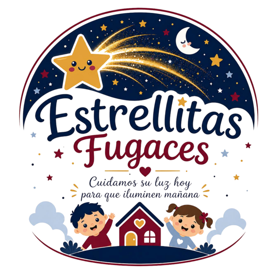
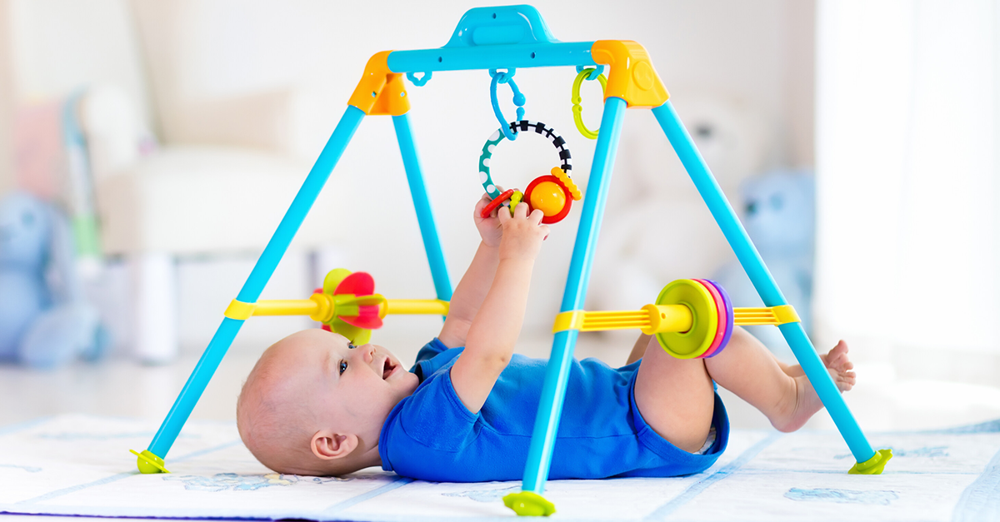
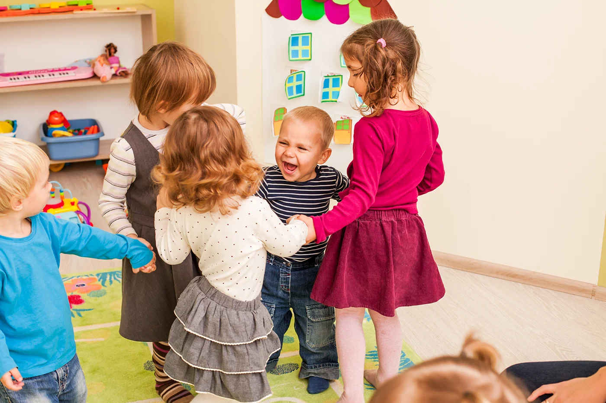
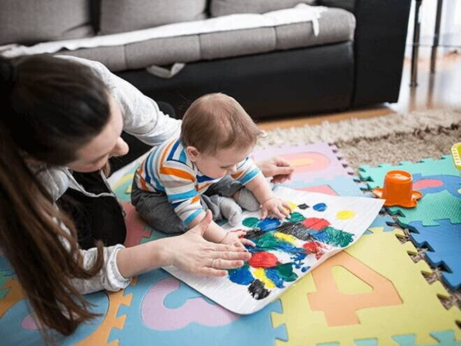
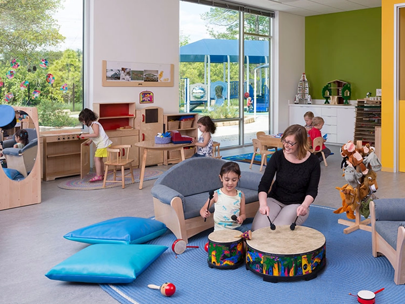
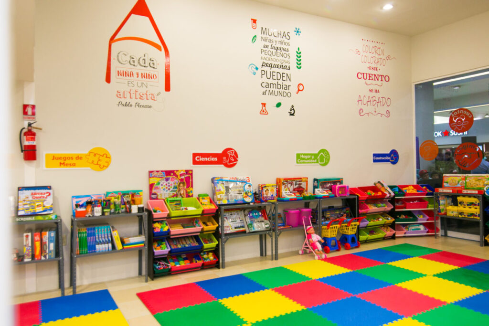
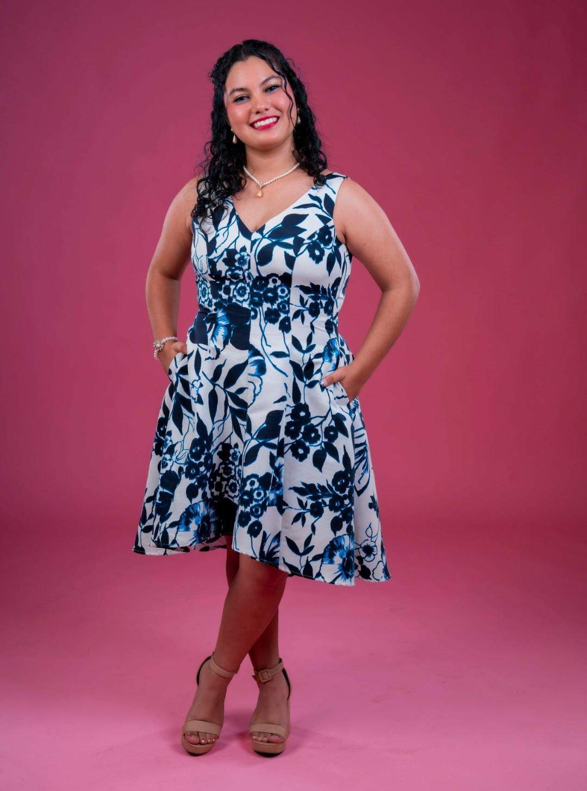
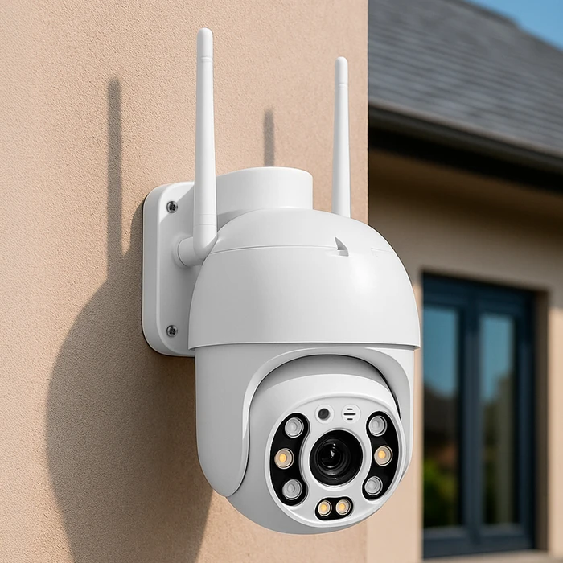
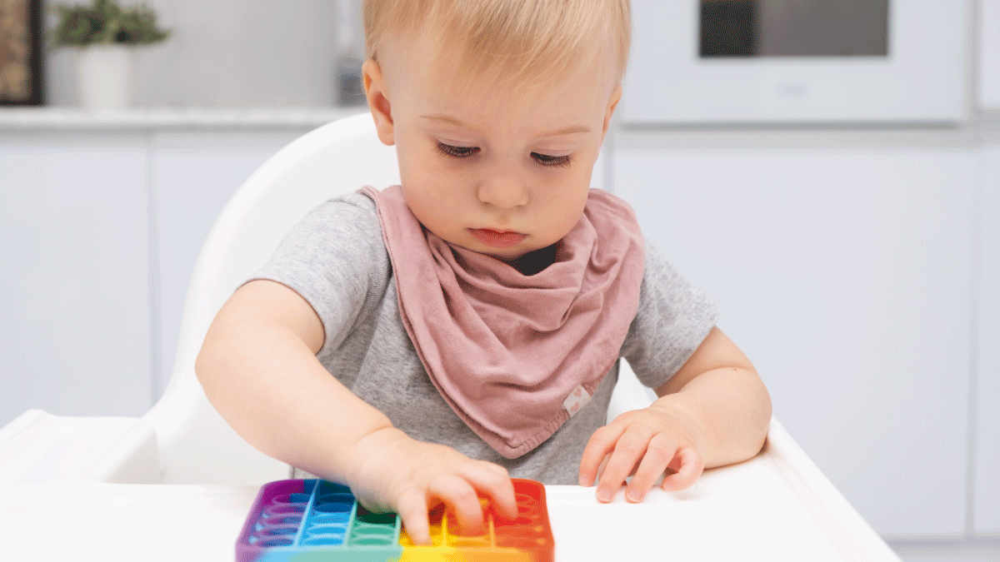

Lunes a viernes
6:30 a.m. – 6:30 p.m.Cuidado regular con desayuno, almuerzo y merienda según el plan acordado con la familia.
Cuidamos su luz hoy para que iluminen mañana
Somos un servicio de cuidado infantil seguro y lleno de amor, pensado para acompañar a familias con largas jornadas laborales. Entornos tranquilos, protocolos claros y un equipo joven y capacitado para que cada niño y niña se sienta protegido, feliz y en confianza.

Horarios pensados para familias con jornadas extendidas. Los horarios exactos de ingreso y retiro se confirman al matricular, según el plan contratado.
Cuidado regular con desayuno, almuerzo y merienda según el plan acordado con la familia.
Servicio con reserva previa para familias que necesitan apoyo puntual los fines de semana.
Salvo eventos o cuidado especial programado con anticipación y cupos limitados.
Coordinamos horarios flexibles para cuidado en casa; escríbenos por WhatsApp para consultar.
Espacios luminosos, juego guiado y acompañamiento cercano. Creemos en un entorno donde los niños y las niñas se sientan seguros, escuchados y felices.

Juego y estimulación
Convivencia y cariño
Actividades guiadas
Entorno acogedor
Espacios seguros Primera infancia
Primera infancia
Tres perfiles para que conozcas quién puede acompañar a tu pequeño o pequeña. Elige con tranquilidad y escríbenos cuando quieras saber más.
Comunicación clara y ambiente ordenado para que padres y pequeños sepan qué esperar en cada momento.
Más información
Energía positiva y juegos creativos que fomentan la confianza y el vínculo con las familias día a día.
Más información
Presencia tranquila y cercana; acompaña con paciencia para que cada niño y niña se sienta seguro y acompañado.
Más informaciónLa seguridad visual complementa nuestro cuidado presencial. Las cámaras están pensadas para dar confianza a los padres, siempre con protocolos claros de privacidad y acceso restringido.
Cámaras solo en áreas comunes de cuidado (salón, comedor, patio). Nunca en zonas de intimidad como baños o áreas de cambio.
Cada familia recibe credenciales personales en la plataforma. Solo quienes figuren en la ficha del niño o niña pueden visualizar la transmisión.
Desde la app o portal web, los padres pueden ver el espacio de cuidado durante el horario de servicio contratado, con conexión cifrada.
Grabación temporal con fines de seguridad, supervisión del equipo directivo y registro de incidentes si fuera necesario, según normativa aplicable.

La privacidad de cada niño y niña es prioritaria. El uso de cámaras se informa por escrito al inscribirse y puede consultarse en cualquier momento con nuestro equipo.
Trabajamos con un enfoque inclusivo: cada pequeño es único. Diseñamos planes de acompañamiento que respetan su ritmo, sus sensibilidades y las indicaciones de su equipo médico o terapéutico.

Centralizamos la información de cada familia en un portal seguro, para que el ingreso sea ordenado, rápido y transparente desde el primer contacto hasta el día a día del cuidado.
Al registrarse, los padres completan la ficha del niño o niña, suben documentos y autorizan quién puede retirarlo. Todo queda disponible para el equipo de Estrellitas Fugaces antes de iniciar el servicio.
En Estrellitas Fugaces entendemos que cada niño y cada familia son distintos. Por eso adaptamos el cuidado al carácter, los gustos y las necesidades de cada pequeño, respetando su ritmo y el de su hogar, para que el día a día sea cercano, previsible y lleno de confianza.